Python integration (for use in Jupyter Notebooks)
Please install the requirements using:
pip install pandas pydataset rpy2Load rpy2 extension:
%%capture
%load_ext rpy2.ipythonInstall the package (if not already installed):
%%R
if (!require(devtools, quietly=T)) install.packages("devtools")
if (!require(ComplexUpset, quietly=T)) devtools::install_github("krassowski/complex-upset")Prepare the datasets
from pydataset import data as load_data
movies = load_data('movies').dropna()
movies.head(3).T| 48 | 112 | 124 | |
|---|---|---|---|
| title | ’Til There Was You | 10 Things I Hate About You | 100 Mile Rule |
| year | 1997 | 1999 | 2002 |
| length | 113 | 97 | 98 |
| budget | 2.3e+07 | 1.6e+07 | 1.1e+06 |
| rating | 4.8 | 6.7 | 5.6 |
| votes | 799 | 19095 | 181 |
| r1 | 4.5 | 4.5 | 4.5 |
| r2 | 4.5 | 4.5 | 4.5 |
| r3 | 4.5 | 4.5 | 4.5 |
| r4 | 14.5 | 4.5 | 4.5 |
| r5 | 14.5 | 4.5 | 14.5 |
| r6 | 14.5 | 14.5 | 24.5 |
| r7 | 14.5 | 24.5 | 14.5 |
| r8 | 4.5 | 14.5 | 14.5 |
| r9 | 4.5 | 14.5 | 4.5 |
| r10 | 14.5 | 14.5 | 14.5 |
| mpaa | PG-13 | PG-13 | R |
| Action | 0 | 0 | 0 |
| Animation | 0 | 0 | 0 |
| Comedy | 1 | 1 | 1 |
| Drama | 0 | 0 | 0 |
| Documentary | 0 | 0 | 0 |
| Romance | 1 | 1 | 0 |
| Short | 0 | 0 | 0 |
genres = list(movies.columns[-7:])
genres['Action', 'Animation', 'Comedy', 'Drama', 'Documentary', 'Romance', 'Short']Convert the genre indicator columns to use boolean values:
movies[genres] = movies[genres] == 1
movies[genres].head(3).T| 48 | 112 | 124 | |
|---|---|---|---|
| Action | False | False | False |
| Animation | False | False | False |
| Comedy | True | True | True |
| Drama | False | False | False |
| Documentary | False | False | False |
| Romance | True | True | False |
| Short | False | False | False |
0. Basic usage
There are two required arguments:
- the first argument is expected to be a dataframe with both group indicator variables and covariates,
- the second argument specifies a list with names of column which indicate the group membership.
Additional arguments can be provided, such as name (specifies xlab() for intersection matrix) or width_ratio (specifies how much space should be occupied by the set size panel). Other such arguments are discussed at length later in this document.
%%R -w 800 -h 300
upset(movies, genres, name='genre', width_ratio=0.1)
0.1 Selecting intersections
We will focus on the intersections with at least ten members (min_size=10) and on a few variables which are significantly different between the intersections (see 2. Running statistical tests).
When using min_size, the empty groups will be skipped by default (e.g. Short movies would have no overlap with size of 10). To keep all groups pass keep_empty_groups=TRUE:
%%R -w 800 -h 300
(
upset(movies, genres, name='genre', width_ratio=0.1, min_size=10, wrap=TRUE, set_sizes=FALSE)
+ ggtitle('Without empty groups (Short dropped)')
+ # adding plots is possible thanks to patchwork
upset(movies, genres, name='genre', width_ratio=0.1, min_size=10, keep_empty_groups=TRUE, wrap=TRUE, set_sizes=FALSE)
+ ggtitle('With empty groups')
)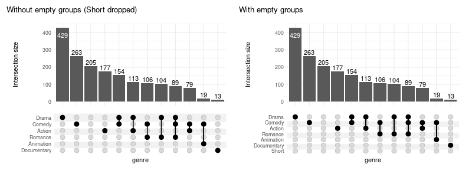
When empty columns are detected a warning will be issued. The silence it, pass warn_when_dropping_groups=FALSE. Complimentary max_size can be used in tandem.
You can also select intersections by degree (min_degree and max_degree):
%%R -w 800 -h 300
upset(
movies, genres, width_ratio=0.1,
min_degree=3,
)
Or request a constant number of intersections with n_intersections:
%%R -w 800 -h 300
upset(
movies, genres, width_ratio=0.1,
n_intersections=15
)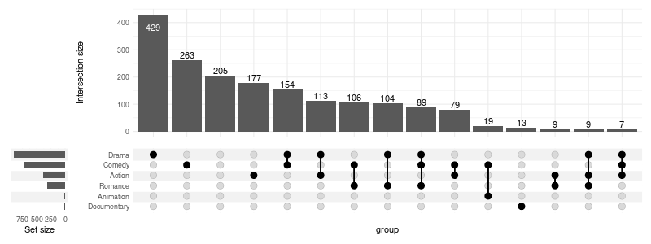
0.2 Region selection modes
There are three modes defining the regions of interest on corresponding Venn diagram:
-
exclusive_intersectionintersection region: intersection elements that belong to the sets defining the intersection but not to any other set (alias: distinct), default -
inclusive_intersectionintersection region: intersection elements that belong to the sets defining the intersection including overlaps with other sets (alias: intersect) -
exclusive_unionregion: union elements that belong to the sets defining the union, excluding those overlapping with any other set -
inclusive_unionregion: union elements that belong to the sets defining the union, including those overlapping with any other set (alias: union)
Example: given three sets \(A\), \(B\) and \(C\) with number of elements defined by the Venn diagram below
%%R
abc_data = create_upset_abc_example()
abc_venn = (
ggplot(arrange_venn(abc_data))
+ coord_fixed()
+ theme_void()
+ scale_color_venn_mix(abc_data)
)
(
abc_venn
+ geom_venn_region(data=abc_data, alpha=0.05)
+ geom_point(aes(x=x, y=y, color=region), size=1)
+ geom_venn_circle(abc_data)
+ geom_venn_label_set(abc_data, aes(label=region))
+ geom_venn_label_region(
abc_data, aes(label=size),
outwards_adjust=1.75,
position=position_nudge(y=0.2)
)
+ scale_fill_venn_mix(abc_data, guide=FALSE)
)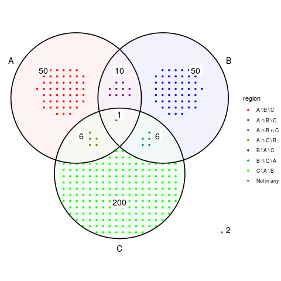
For the above sets \(A\) and \(B\) the region selection modes correspond to region of Venn diagram defined as follows:
- exclusive intersection: \((A \cap B) \setminus C\)
- inclusive intersection: \(A \cap B\)
- exclusive union: \((A \cup B) \setminus C\)
- inclusive union: \(A \cup B\)
and have the total number of elements as in the table below:
| members mode | exclusive int. | inclusive int. | exclusive union | inclusive union |
|---|---|---|---|---|
| (A, B) | 10 | 11 | 110 | 123 |
| (A, C) == (B, C) | 6 | 7 | 256 | 273 |
| (A) == (B) | 50 | 67 | 50 | 67 |
| (C) | 200 | 213 | 200 | 213 |
| (A, B, C) | 1 | 1 | 323 | 323 |
| () | 2 | 2 | 2 | 2 |
%%R -w 600 -h 650
simple_venn = (
abc_venn
+ geom_venn_region(data=abc_data, alpha=0.3)
+ geom_point(aes(x=x, y=y), size=0.75, alpha=0.3)
+ geom_venn_circle(abc_data)
+ geom_venn_label_set(abc_data, aes(label=region), outwards_adjust=2.55)
)
highlight = function(regions) scale_fill_venn_mix(
abc_data, guide=FALSE, highlight=regions, inactive_color='NA'
)
(
(
simple_venn + highlight(c('A-B')) + labs(title='Exclusive intersection of A and B')
| simple_venn + highlight(c('A-B', 'A-B-C')) + labs(title='Inclusive intersection of A and B')
) /
(
simple_venn + highlight(c('A-B', 'A', 'B')) + labs(title='Exclusive union of A and B')
| simple_venn + highlight(c('A-B', 'A-B-C', 'A', 'B', 'A-C', 'B-C')) + labs(title='Inclusive union of A and B')
)
)
When customizing the intersection_size() it is important to adjust the mode accordingly, as it defaults to exclusive_intersection and cannot be automatically deduced when user customizations are being applied:
%%R -w 800 -h 450
abc_upset = function(mode) upset(
abc_data, c('A', 'B', 'C'), mode=mode, set_sizes=FALSE,
encode_sets=FALSE,
queries=list(upset_query(intersect=c('A', 'B'), color='orange')),
base_annotations=list(
'Size'=(
intersection_size(
mode=mode,
mapping=aes(fill=exclusive_intersection),
size=0,
text=list(check_overlap=TRUE)
) + scale_fill_venn_mix(
data=abc_data,
guide=FALSE,
colors=c('A'='red', 'B'='blue', 'C'='green3')
)
)
)
)
(
(abc_upset('exclusive_intersection') | abc_upset('inclusive_intersection'))
/
(abc_upset('exclusive_union') | abc_upset('inclusive_union'))
)
0.3 Displaying all intersections
Too display all possible intersections (rather than only the observed ones) use intersections='all'.
Note 1: it is usually desired to filter all the possible intersections down with max_degree and/or min_degree to avoid generating all combinations as those can easily use up all available RAM memory when dealing with multiple sets (e.g. all human genes) due to sheer number of possible combinations
Note 2: using intersections='all' is only reasonable for mode different from the default exclusive intersection.
%%R -w 800 -h 300
upset(
movies, genres,
width_ratio=0.1,
min_size=10,
mode='inclusive_union',
base_annotations=list('Size'=(intersection_size(counts=FALSE, mode='inclusive_union'))),
intersections='all',
max_degree=3
)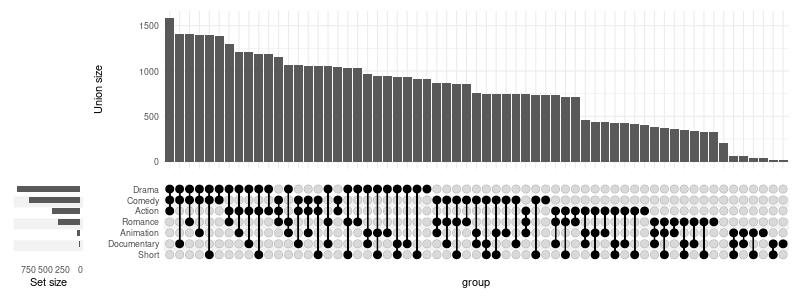
1. Adding components
We can add multiple annotation components (also called panels) using one of the three methods demonstrated below:
%%R -w 800 -h 800
set.seed(0) # keep the same jitter for identical plots
upset(
movies,
genres,
annotations = list(
# 1st method - passing list:
'Length'=list(
aes=aes(x=intersection, y=length),
# provide a list if you wish to add several geoms
geom=geom_boxplot(na.rm=TRUE)
),
# 2nd method - using ggplot
'Rating'=(
# note that aes(x=intersection) is supplied by default and can be skipped
ggplot(mapping=aes(y=rating))
# checkout ggbeeswarm::geom_quasirandom for better results!
+ geom_jitter(aes(color=log10(votes)), na.rm=TRUE)
+ geom_violin(alpha=0.5, na.rm=TRUE)
),
# 3rd method - using `upset_annotate` shorthand
'Budget'=upset_annotate('budget', geom_boxplot(na.rm=TRUE))
),
min_size=10,
width_ratio=0.1
)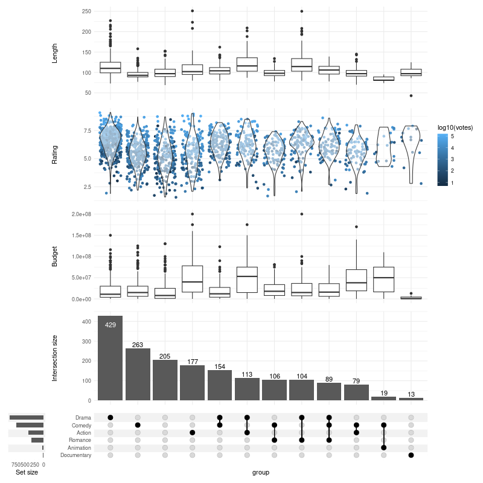
You can also use barplots to demonstrate differences in proportions of categorical variables:
%%R -w 800 -h 500
upset(
movies,
genres,
annotations = list(
'MPAA Rating'=(
ggplot(mapping=aes(fill=mpaa))
+ geom_bar(stat='count', position='fill')
+ scale_y_continuous(labels=scales::percent_format())
+ scale_fill_manual(values=c(
'R'='#E41A1C', 'PG'='#377EB8',
'PG-13'='#4DAF4A', 'NC-17'='#FF7F00'
))
+ ylab('MPAA Rating')
)
),
width_ratio=0.1
)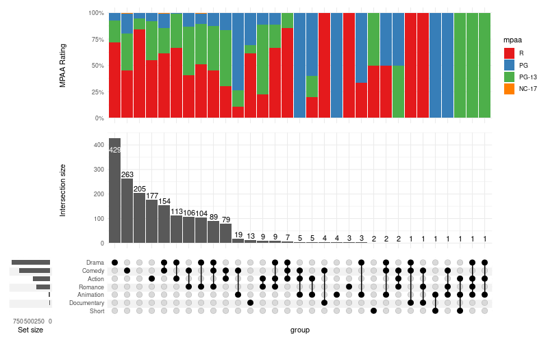
1.1. Changing modes in annotations
Use upset_mode to change the mode of the annotation:
%%R -w 800 -h 800
upset(
movies,
genres,
mode='inclusive_intersection',
annotations = list(
# if not specified, the mode will follow the mode set in `upset()` call (here: `inclusive_intersection`)
'Length (inclusive intersection)'=(
ggplot(mapping=aes(y=length))
+ geom_jitter(alpha=0.2, na.rm=TRUE)
),
'Length (exclusive intersection)'=(
ggplot(mapping=aes(y=length))
+ geom_jitter(alpha=0.2, na.rm=TRUE)
+ upset_mode('exclusive_intersection')
),
'Length (inclusive union)'=(
ggplot(mapping=aes(y=length))
+ geom_jitter(alpha=0.2, na.rm=TRUE)
+ upset_mode('inclusive_union')
)
),
min_size=10,
width_ratio=0.1
)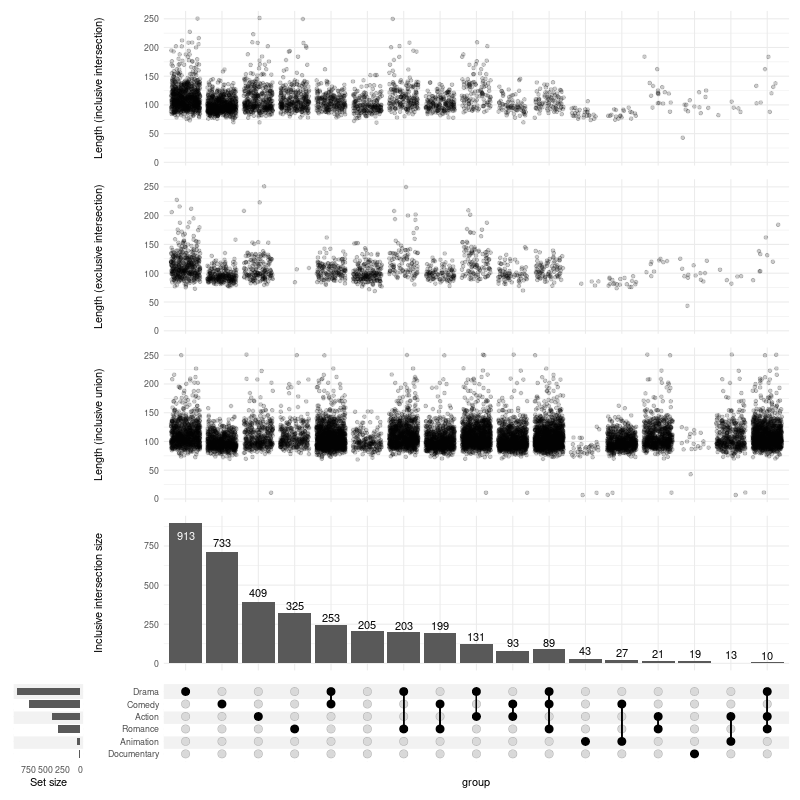
2. Running statistical tests
%R upset_test(movies, genres)[1] "year, length, budget, rating, votes, r1, r2, r3, r4, r5, r6, r7, r8, r9, r10, mpaa differ significantly between intersections"| variable | p.value | statistic | test | fdr | |
|---|---|---|---|---|---|
| length | length | 8.604723e-235 | 1206.848164 | Kruskal-Wallis rank sum test | 1.462803e-233 |
| budget | budget | 2.671340e-133 | 725.232201 | Kruskal-Wallis rank sum test | 1.513759e-132 |
| rating | rating | 1.853155e-133 | 725.992851 | Kruskal-Wallis rank sum test | 1.513759e-132 |
| r8 | r8 | 6.374777e-111 | 617.699129 | Kruskal-Wallis rank sum test | 2.709280e-110 |
| r9 | r9 | 6.951214e-93 | 530.381150 | Kruskal-Wallis rank sum test | 2.363413e-92 |
| mpaa | mpaa | 1.708287e-92 | 528.482832 | Kruskal-Wallis rank sum test | 4.840145e-92 |
| r3 | r3 | 3.658470e-52 | 329.601281 | Kruskal-Wallis rank sum test | 8.884856e-52 |
| r4 | r4 | 4.842690e-50 | 318.913223 | Kruskal-Wallis rank sum test | 1.029072e-49 |
| r5 | r5 | 3.172246e-49 | 314.792443 | Kruskal-Wallis rank sum test | 5.992020e-49 |
| r1 | r1 | 1.332122e-48 | 311.643005 | Kruskal-Wallis rank sum test | 2.264607e-48 |
| r2 | r2 | 2.406459e-42 | 279.837212 | Kruskal-Wallis rank sum test | 3.719074e-42 |
| r10 | r10 | 1.074554e-35 | 245.588810 | Kruskal-Wallis rank sum test | 1.522285e-35 |
| votes | votes | 2.161612e-29 | 212.554522 | Kruskal-Wallis rank sum test | 2.826724e-29 |
| r7 | r7 | 4.945764e-18 | 150.745938 | Kruskal-Wallis rank sum test | 6.005571e-18 |
| r6 | r6 | 1.755896e-08 | 93.747553 | Kruskal-Wallis rank sum test | 1.990015e-08 |
| year | year | 2.292028e-02 | 47.364219 | Kruskal-Wallis rank sum test | 2.435280e-02 |
| title | title | 9.955906e-01 | 13.591607 | Kruskal-Wallis rank sum test | 9.955906e-01 |
Kruskal-Wallis rank sum test is not always the best choice.
You can either change the test for:
- all the variables (
test=your.test), or - specific variables (using
tests=list(variable=some.test)argument)
The tests are called with (formula=variable ~ intersection, data) signature, such as accepted by kruskal.test. The result is expected to be a list with following members:
p.valuestatisticmethod
It is easy to adapt tests which do not obey this signature/output convention; for example the Chi-squared test and anova can be wrapped with two-line functions as follows:
%%R
chisq_from_formula = function(formula, data) {
chisq.test(
ftable(formula, data)
)
}
anova_single = function(formula, data) {
result = summary(aov(formula, data))
list(
p.value=result[[1]][['Pr(>F)']][[1]],
method='Analysis of variance Pr(>F)',
statistic=result[[1]][['F value']][[1]]
)
}
custom_tests = list(
mpaa=chisq_from_formula,
budget=anova_single
)%R head(upset_test(movies, genres, tests=custom_tests))[1] "year, length, budget, rating, votes, r1, r2, r3, r4, r5, r6, r7, r8, r9, r10, mpaa differ significantly between intersections"| variable | p.value | statistic | test | fdr | |
|---|---|---|---|---|---|
| length | length | 8.604723e-235 | 1206.848164 | Kruskal-Wallis rank sum test | 1.462803e-233 |
| budget | budget | 6.486372e-171 | 30.671599 | Analysis of variance Pr(>F) | 5.513416e-170 |
| rating | rating | 1.853155e-133 | 725.992851 | Kruskal-Wallis rank sum test | 1.050121e-132 |
| r8 | r8 | 6.374777e-111 | 617.699129 | Kruskal-Wallis rank sum test | 2.709280e-110 |
| mpaa | mpaa | 6.965453e-102 | 735.291550 | Pearson’s Chi-squared test | 2.368254e-101 |
| r9 | r9 | 6.951214e-93 | 530.381150 | Kruskal-Wallis rank sum test | 1.969511e-92 |
Many tests will require at least two observations in each group. You can skip intersections with less than two members with min_size=2.
%%R
bartlett_results = suppressWarnings(upset_test(movies, genres, test=bartlett.test, min_size=2))
tail(bartlett_results)[1] "NA, year, length, budget, rating, votes, r1, r2, r3, r4, r7, r9, r10, NA differ significantly between intersections"
variable p.value statistic test
r7 r7 0.02189348 47.56605 Bartlett test of homogeneity of variances
r6 r6 0.76136318 24.23341 Bartlett test of homogeneity of variances
r8 r8 0.77367750 23.96341 Bartlett test of homogeneity of variances
r5 r5 0.93684489 19.14847 Bartlett test of homogeneity of variances
title title NA NA Bartlett test of homogeneity of variances
mpaa mpaa NA NA Bartlett test of homogeneity of variances
fdr
r7 0.02736685
r6 0.82894018
r8 0.82894018
r5 0.93684489
title NA
mpaa NA2.1 Ignore specific variables
You may want to exclude variables which are:
- highly correlated and therefore interfering with the FDR calculation, or
- simply irrelevant
In the movies example, the title variable is not a reasonable thing to compare. We can ignore it using:
%%R
# note: title no longer present
rownames(upset_test(movies, genres, ignore=c('title')))[1] "year, length, budget, rating, votes, r1, r2, r3, r4, r5, r6, r7, r8, r9, r10, mpaa differ significantly between intersections"
[1] "length" "budget" "rating" "r8" "r9" "mpaa" "r3" "r4"
[9] "r5" "r1" "r2" "r10" "votes" "r7" "r6" "year" 3. Adjusting “Intersection size”
3.1 Counts
The counts over the bars can be disabled:
%%R -w 800 -h 300
upset(
movies,
genres,
base_annotations=list(
'Intersection size'=intersection_size(counts=FALSE)
),
min_size=10,
width_ratio=0.1
)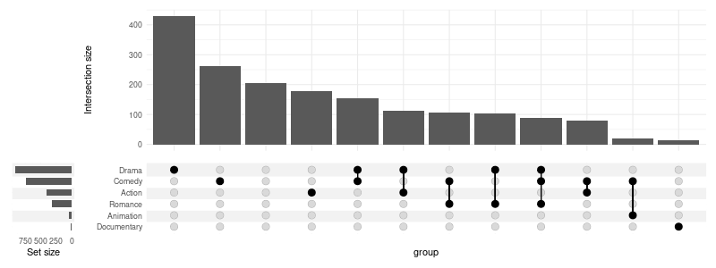
The colors can be changed, and additional annotations added:
%%R -w 800 -h 300
upset(
movies,
genres,
base_annotations=list(
'Intersection size'=intersection_size(
text_colors=c(
on_background='brown', on_bar='yellow'
)
)
+ annotate(
geom='text', x=Inf, y=Inf,
label=paste('Total:', nrow(movies)),
vjust=1, hjust=1
)
+ ylab('Intersection size')
),
min_size=10,
width_ratio=0.1
)Any parameter supported by geom_text can be passed in text list:
%%R -w 800 -h 300
upset(
movies,
genres,
base_annotations=list(
'Intersection size'=intersection_size(
text=list(
vjust=-0.1,
hjust=-0.1,
angle=45
)
)
),
min_size=10,
width_ratio=0.1
)
3.2 Fill the bars
%%R -w 800 -h 300
upset(
movies,
genres,
base_annotations=list(
'Intersection size'=intersection_size(
counts=FALSE,
mapping=aes(fill=mpaa)
)
),
width_ratio=0.1
)%%R -w 800 -h 300
upset(
movies,
genres,
base_annotations=list(
'Intersection size'=intersection_size(
counts=FALSE,
mapping=aes(fill=mpaa)
) + scale_fill_manual(values=c(
'R'='#E41A1C', 'PG'='#377EB8',
'PG-13'='#4DAF4A', 'NC-17'='#FF7F00'
))
),
width_ratio=0.1
)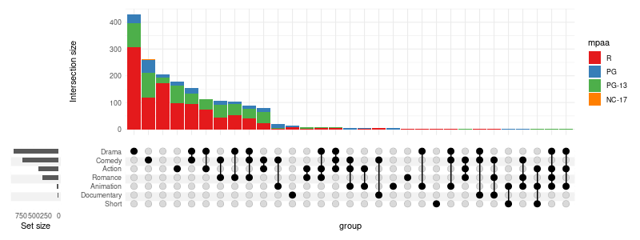
%%R -w 800 -h 300
upset(
movies,
genres,
base_annotations=list(
'Intersection size'=intersection_size(
counts=FALSE,
mapping=aes(fill='bars_color')
) + scale_fill_manual(values=c('bars_color'='blue'), guide='none')
),
width_ratio=0.1
)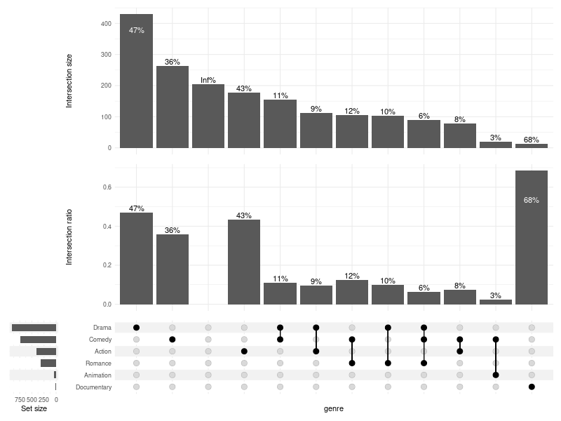
3.3 Adjusting the height ratio
Setting height_ratio=1 will cause the intersection matrix and the intersection size to have an equal height:
%%R -w 800 -h 300
upset(
movies,
genres,
height_ratio=1,
width_ratio=0.1
)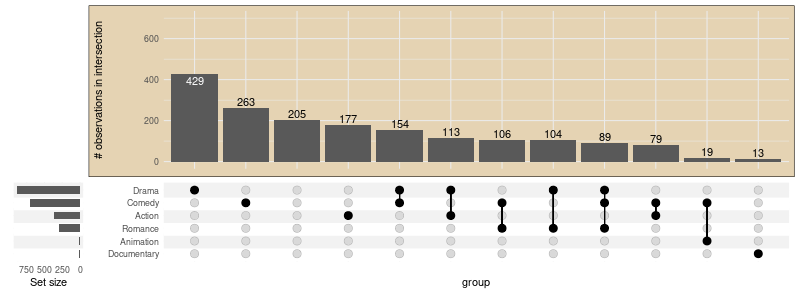
3.5 Hiding intersection size
You can always disable the intersection size altogether:
%%R -w 800 -h 160
upset(
movies,
genres,
base_annotations=list(),
min_size=10,
width_ratio=0.1
)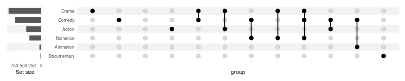
3.6 Showing intersection size/union size ratio
It can be useful to visualise which intersections are larger than expected by chance (assuming equal probability of belonging to multiple sets); this can be achieved using the intersection size/union size ratio.
%%R -w 800 -h 600
upset(
movies, genres, name='genre', width_ratio=0.1, min_size=10,
base_annotations=list(
'Intersection size'=intersection_size(),
'Intersection ratio'=intersection_ratio()
)
)The plot above tells us that the analysed documentary movies are almost always (in over 60% of cases) documentaries (and nothing more!), while comedies more often include elements of other genres (e.g. drama, romance) rather than being comedies alone (like stand-up shows).
3.7 Showing percentages
text_mapping can be used to manipulate the aesthetics of the labels. Using the intersection_size and union_size one can calculate percentage of items in the intersection (relative to the potential size of the intersection). A upset_text_percentage(digits=0, sep='') shorthand is provided for convenience:
%%R -w 800 -h 600
upset(
movies, genres, name='genre', width_ratio=0.1, min_size=10,
base_annotations=list(
# with manual aes specification:
'Intersection size'=intersection_size(text_mapping=aes(label=paste0(round(
!!get_size_mode('exclusive_intersection')/!!get_size_mode('inclusive_union') * 100
), '%'))),
# using shorthand:
'Intersection ratio'=intersection_ratio(text_mapping=aes(label=!!upset_text_percentage()))
)
)
Also see 10. Display percentages.
3.8 Further adjustments using ggplot2 functions
%%R -w 800 -h 300
upset(
movies, genres, width_ratio=0.1,
base_annotations = list(
'Intersection size'=(
intersection_size()
+ ylim(c(0, 700))
+ theme(plot.background=element_rect(fill='#E5D3B3'))
+ ylab('# observations in intersection')
)
),
min_size=10
)4. Adjusting “set size”
When using thresholding or selection criteria (such as min_size or n_intersections) the change in number of elements in each set size is not reflected in the set sizes plot by default. You can change this by providing filter_intersections=TRUE to upset_set_size.
%%R -w 800 -h 250
upset(
movies, genres,
min_size=200,
set_sizes=upset_set_size()
) | upset(
movies, genres,
min_size=200,
set_sizes=upset_set_size(filter_intersections=TRUE)
)
4.1 Rotate labels
To rotate the labels modify corresponding theme:
%%R -w 400 -h 300
upset(
movies, genres,
min_size=100,
width_ratio=0.15,
set_sizes=(
upset_set_size()
+ theme(axis.text.x=element_text(angle=90))
)
)To display the ticks:
%%R -w 400 -h 300
upset(
movies, genres, width_ratio=0.3, min_size=100, wrap=TRUE,
set_sizes=(
upset_set_size()
+ theme(axis.ticks.x=element_line())
)
)4.2 Modify geoms and other layers
Arguments of the geom_bar can be adjusted in upset_set_size; it can use a different geom, or be replaced with a custom list of layers altogether:
%%R -w 800 -h 300
(
upset(
movies, genres, width_ratio=0.5, max_size=100, min_size=15, wrap=TRUE,
set_sizes=upset_set_size(
geom=geom_bar(width=0.4)
)
)
+
upset(
movies, genres, width_ratio=0.5, max_size=100, min_size=15, wrap=TRUE,
set_sizes=upset_set_size(
geom=geom_point(
stat='count',
color='blue'
)
)
)
+
upset(
movies, genres, width_ratio=0.5, max_size=100, min_size=15, wrap=TRUE,
set_sizes=(
upset_set_size(
geom=geom_point(stat='count'),
mapping=aes(y=..count../max(..count..)),
)
+ ylab('Size relative to the largest')
)
)
)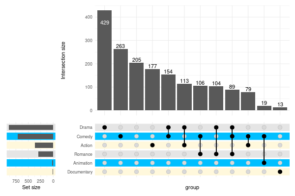
4.3 Logarithmic scale
In order to use a log scale we need pass additional scale to in layers argument. However, as the bars are on flipped coordinates, we need a reversed log transformation. Appropriate function, reverse_log_trans() is provided:
%%R -w 500 -h 300
upset(
movies, genres,
width_ratio=0.1,
min_size=10,
set_sizes=(
upset_set_size()
+ theme(axis.text.x=element_text(angle=90))
+ scale_y_continuous(trans=reverse_log_trans())
),
queries=list(upset_query(set='Drama', fill='blue'))
)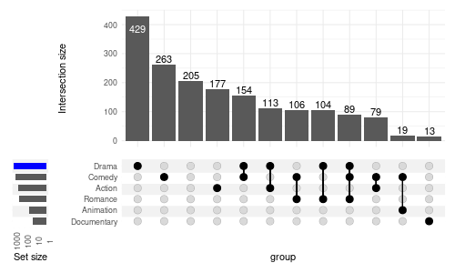
We can also modify the labels to display the logged values:
%%R -w 500 -h 300
upset(
movies, genres,
min_size=10,
width_ratio=0.2,
set_sizes=upset_set_size()
+ scale_y_continuous(
trans=reverse_log_trans(),
labels=log10
)
+ ylab('log10(set size)')
)4.4 Display counts
To display the count add geom_text():
%%R -w 500 -h 300
upset(
movies, genres,
min_size=10,
width_ratio=0.3,
encode_sets=FALSE, # for annotate() to select the set by name disable encoding
set_sizes=(
upset_set_size()
+ geom_text(aes(label=..count..), hjust=1.1, stat='count')
+ annotate(geom='text', label='✲', x='Drama', y=850, color='white', size=3)
+ expand_limits(y=1100)
+ theme(axis.text.x=element_text(angle=90))
)
)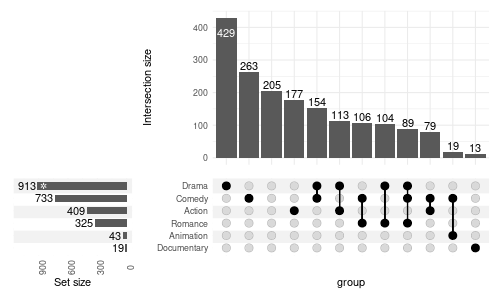

5. Adjusting other aesthetics
5.1 Stripes
Change the colors:
%%R -w 600 -h 400
upset(
movies,
genres,
min_size=10,
width_ratio=0.2,
stripes=c('cornsilk1', 'deepskyblue1')
)You can use multiple colors:
%%R -w 600 -h 400
upset(
movies,
genres,
min_size=10,
width_ratio=0.2,
stripes=c('cornsilk1', 'deepskyblue1', 'grey90')
)
Or, set the color to white to effectively disable the stripes:
%%R -w 600 -h 400
upset(
movies,
genres,
min_size=10,
width_ratio=0.2,
stripes='white'
)5.2 Adding title
Adding title with ggtitle with add it to the intersection matrix:
%%R -w 600 -h 400
upset(movies, genres, min_size=10) + ggtitle('Intersection matrix title')
In order to add a title for the entire plot, you need to wrap the plot:
%%R -w 600 -h 400
upset(movies, genres, min_size=10, wrap=TRUE) + ggtitle('The overlap between genres')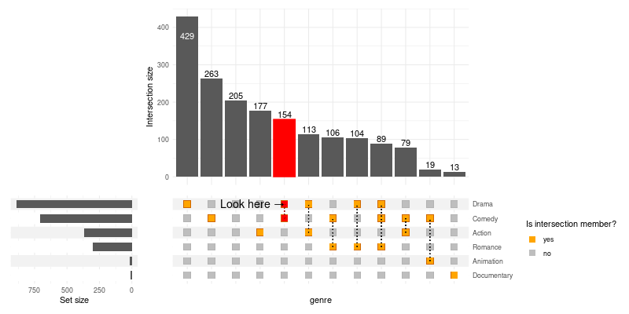
5.3 Making the plot transparent
You need to set the plot background to transparent and adjust colors of stripes to your liking:
%%R -w 600 -h 400
(
upset(
movies, genres, name='genre', width_ratio=0.1, min_size=10,
stripes=c(alpha('grey90', 0.45), alpha('white', 0.3))
)
& theme(plot.background=element_rect(fill='transparent', color=NA))
)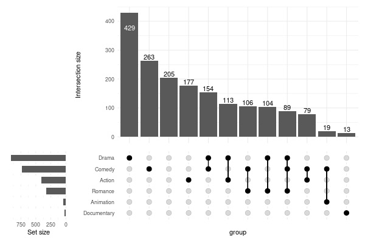
Use ggsave('upset.png', bg="transparent") when exporting to PNG.
5.4 Adjusting the intersection matrix
Use intersection_matrix() to modify the matrix parameters:
%%R -w 800 -h 400
upset(
movies, genres, name='genre', min_size=10,
encode_sets=FALSE, # for annotate() to select the set by name disable encoding
matrix=(
intersection_matrix(
geom=geom_point(
shape='square',
size=3.5
),
segment=geom_segment(
linetype='dotted'
),
outline_color=list(
active='darkorange3',
inactive='grey70'
)
)
+ scale_color_manual(
values=c('TRUE'='orange', 'FALSE'='grey'),
labels=c('TRUE'='yes', 'FALSE'='no'),
breaks=c('TRUE', 'FALSE'),
name='Is intersection member?'
)
+ scale_y_discrete(
position='right'
)
+ annotate(
geom='text',
label='Look here →',
x='Comedy-Drama',
y='Drama',
size=5,
hjust=1
)
),
queries=list(
upset_query(
intersect=c('Drama', 'Comedy'),
color='red',
fill='red',
only_components=c('intersections_matrix', 'Intersection size')
)
)
)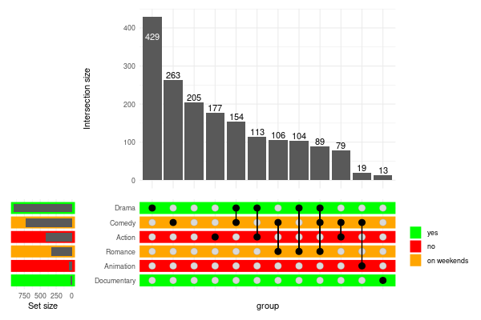
6. Themes
The themes for specific components are defined in upset_themes list, which contains themes for:
%%R
names(upset_themes)[1] "intersections_matrix" "Intersection size" "overall_sizes"
[4] "default" You can substitute this list for your own using themes argument. While you can specify a theme for every component, if you omit one or more components those will be taken from the element named default.
6.1 Substituting themes
%%R -w 800 -h 400
upset(movies, genres, min_size=10, themes=list(default=theme()))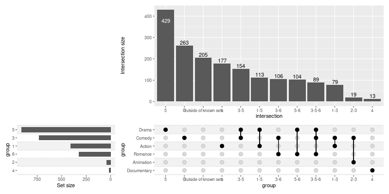
You can also add themes for your custom panels/annotations:
%%R -w 800 -h 800
upset(
movies,
genres,
annotations = list(
'Length'=list(
aes=aes(x=intersection, y=length),
geom=geom_boxplot()
),
'Rating'=list(
aes=aes(x=intersection, y=rating),
geom=list(
geom_jitter(aes(color=log10(votes))),
geom_violin(alpha=0.5)
)
)
),
min_size=10,
width_ratio=0.1,
themes=modifyList(
upset_themes,
list(Rating=theme_void(), Length=theme())
)
)
6.2 Adjusting the default themes
Modify all the default themes as once with upset_default_themes():
%%R -w 800 -h 400
upset(
movies, genres, min_size=10, width_ratio=0.1,
themes=upset_default_themes(text=element_text(color='red'))
)
To modify only a subset of default themes use upset_modify_themes():
%%R -w 800 -h 400
upset(
movies, genres,
base_annotations=list('Intersection size'=intersection_size(counts=FALSE)),
min_size=100,
width_ratio=0.1,
themes=upset_modify_themes(
list(
'intersections_matrix'=theme(text=element_text(size=20)),
'overall_sizes'=theme(axis.text.x=element_text(angle=90))
)
)
)
7. Highlighting (queries)
Pass a list of lists generated with upset_query() utility to the optional queries argument to selectively modify aesthetics of specific intersections or sets.
Use one of the arguments: set or intersect (not both) to specify what to highlight: - set will highlight the bar of the set size, - intersect will highlight an intersection on all components (by default), or on components chosen with only_components - all other parameters will be used to modify the geoms
%%R -w 800 -h 600
upset(
movies, genres, name='genre', width_ratio=0.1, min_size=10,
annotations = list(
'Length'=list(
aes=aes(x=intersection, y=length),
geom=geom_boxplot()
)
),
queries=list(
upset_query(
intersect=c('Drama', 'Comedy'),
color='red',
fill='red',
only_components=c('intersections_matrix', 'Intersection size')
),
upset_query(
set='Drama',
fill='blue'
),
upset_query(
intersect=c('Romance', 'Comedy'),
fill='yellow',
only_components=c('Length')
)
)
)8. Sorting
8.1 Sorting intersections
By degree:
%%R -w 800 -h 300
upset(movies, genres, width_ratio=0.1, sort_intersections_by='degree')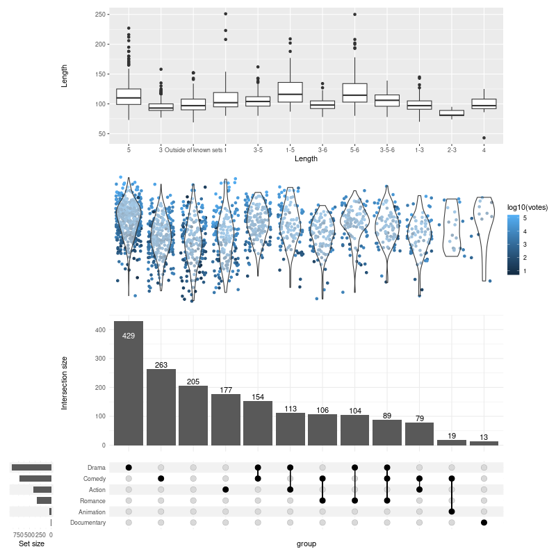
By ratio:
%%R -w 800 -h 400
upset(
movies, genres, name='genre', width_ratio=0.1, min_size=10,
sort_intersections_by='ratio',
base_annotations=list(
'Intersection size'=intersection_size(text_mapping=aes(label=!!upset_text_percentage())),
'Intersection ratio'=intersection_ratio(text_mapping=aes(label=!!upset_text_percentage()))
)
)The other way around:
%%R -w 800 -h 300
upset(movies, genres, width_ratio=0.1, sort_intersections='ascending')Without any sorting:
%%R -w 800 -h 300
upset(movies, genres, width_ratio=0.1, sort_intersections=FALSE)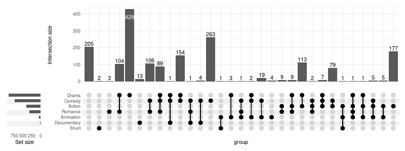
First by degree then by cardinality:
%%R -w 800 -h 300
upset(movies, genres, width_ratio=0.1, sort_intersections_by=c('degree', 'cardinality'))8.2 Sorting sets
Ascending:
%%R -w 800 -h 300
upset(movies, genres, width_ratio=0.1, sort_sets='ascending')
Without sorting - preserving the order as in genres:
genres['Action', 'Animation', 'Comedy', 'Drama', 'Documentary', 'Romance', 'Short']%%R -w 800 -h 300
upset(movies, genres, width_ratio=0.1, sort_sets=FALSE)
9. Grouping
9.1 Grouping intersections
Use group_by='sets' to group intersections by set. If needed, the intersections will be repeated so that they appear in each set group. Use upset_query() with group argument to color the intersection matrix accordingly.
%%R -w 800 -h 300
upset(
movies, c("Action", "Comedy", "Drama"),
width_ratio=0.2,
group_by='sets',
queries=list(
upset_query(
intersect=c('Drama', 'Comedy'),
color='red',
fill='red',
only_components=c('intersections_matrix', 'Intersection size')
),
upset_query(group='Drama', color='blue'),
upset_query(group='Comedy', color='orange'),
upset_query(group='Action', color='purple'),
upset_query(set='Drama', fill='blue'),
upset_query(set='Comedy', fill='orange'),
upset_query(set='Action', fill='purple')
)
)
10. Display percentages
Use aes_percentage() utility preceded with !! syntax to easily display percentages. In the examples below only percentages for the movies with R rating are shown to avoid visual clutter.
%%R
rating_scale = scale_fill_manual(values=c(
'R'='#E41A1C', 'PG'='#377EB8',
'PG-13'='#4DAF4A', 'NC-17'='#FF7F00'
))
show_hide_scale = scale_color_manual(values=c('show'='black', 'hide'='transparent'), guide=FALSE)10.1 Within intersection
%%R -w 800 -h 500
upset(
movies, genres, name='genre', width_ratio=0.1, min_size=100,
annotations =list(
'MPAA Rating'=list(
aes=aes(x=intersection, fill=mpaa),
geom=list(
geom_bar(stat='count', position='fill'),
geom_text(
aes(
label=!!aes_percentage(relative_to='intersection'),
color=ifelse(mpaa == 'R', 'show', 'hide')
),
stat='count',
position=position_fill(vjust = .5)
),
scale_y_continuous(labels=scales::percent_format()),
show_hide_scale,
rating_scale
)
)
)
)
10.2 Relative to the group
%%R -w 800 -h 500
upset(
movies, genres, name='genre', width_ratio=0.1, min_size=100,
annotations =list(
'MPAA Rating'=list(
aes=aes(x=intersection, fill=mpaa),
geom=list(
geom_bar(stat='count', position='fill'),
geom_text(
aes(
label=!!aes_percentage(relative_to='group'),
group=mpaa,
color=ifelse(mpaa == 'R', 'show', 'hide')
),
stat='count',
position=position_fill(vjust = .5)
),
scale_y_continuous(labels=scales::percent_format()),
show_hide_scale,
rating_scale
)
)
)
)
10.3 Relative to all observed values
%%R -w 800 -h 500
upset(
movies, genres, name='genre', width_ratio=0.1, min_size=100,
annotations =list(
'MPAA Rating'=list(
aes=aes(x=intersection, fill=mpaa),
geom=list(
geom_bar(stat='count', position='fill'),
geom_text(
aes(
label=!!aes_percentage(relative_to='all'),
color=ifelse(mpaa == 'R', 'show', 'hide')
),
stat='count',
position=position_fill(vjust = .5)
),
scale_y_continuous(labels=scales::percent_format()),
show_hide_scale,
rating_scale
)
)
)
)11. Advanced usage examples
11.1 Display text on some bars only
%%R -w 800 -h 500
upset(
movies, genres, name='genre', width_ratio=0.1, min_size=100,
annotations =list(
'MPAA Rating'=list(
aes=aes(x=intersection, fill=mpaa),
geom=list(
geom_bar(stat='count', position='fill'),
geom_text(
aes(label=ifelse(mpaa == 'R', 'R', NA)),
stat='count',
position=position_fill(vjust = .5),
na.rm=TRUE
),
show_hide_scale,
rating_scale
)
)
)
)11.2 Combine multiple plots together
%%R -w 800 -h 500
library(patchwork)
annotations = list(
'MPAA Rating'=list(
aes=aes(x=intersection, fill=mpaa),
geom=list(
geom_bar(stat='count', position='fill')
)
)
)
set.seed(0) # for replicable example only
data_1 = movies[sample(nrow(movies), 100), ]
data_2 = movies[sample(nrow(movies), 100), ]
u1 = upset(data_1, genres, min_size=5, base_annotations=annotations)
u2 = upset(data_2, genres, min_size=5, base_annotations=annotations)
(u1 | u2) + plot_layout(guides='collect')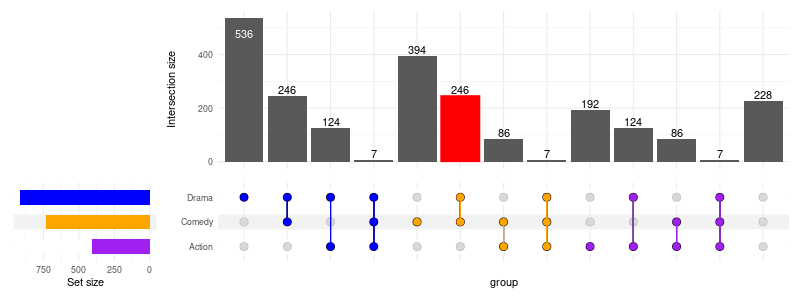
11.3 Change height of the annotations
%%R -w 800 -h 350
upset(
movies, genres, name='genre', width_ratio=0.1, min_size=100,
annotations =list(
'MPAA Rating'=list(
aes=aes(x=intersection, fill=mpaa),
geom=list(
geom_bar(stat='count', position='fill'),
scale_y_continuous(labels=scales::percent_format())
)
)
)
) + patchwork::plot_layout(heights=c(0.5, 1, 0.5))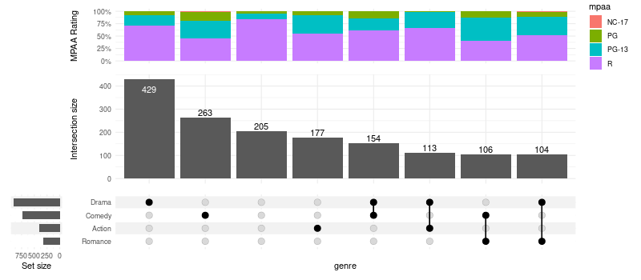
12. Venn diagrams
Simple implementation of Venn diagrams is provided, taking the same input format as upset() but only supporting up to three sets.
%%R
movies_subset = head(movies, 300)
genres_subset = c('Comedy', 'Drama', 'Action')
movies_subset$good_rating = movies_subset$rating > mean(movies_subset$rating)
arranged = arrange_venn(movies_subset, sets=genres_subset)12.1 Highlight specific elements
%%R -w 800 -h 550
(
ggplot(arranged)
+ theme_void()
+ coord_fixed()
+ geom_point(aes(x=x, y=y, color=region, shape=good_rating, fill=length), size=2.7)
+ geom_venn_circle(movies_subset, sets=genres_subset, size=1)
+ geom_venn_label_set(movies_subset, sets=genres_subset, aes(label=region), outwards_adjust=2.6)
+ geom_venn_label_region(movies_subset, sets=genres_subset, aes(label=size), position=position_nudge(y=0.15))
+ geom_curve(
data=arranged[which.min(arranged$length), ],
aes(xend=x+0.01, yend=y+0.01), x=1.5, y=2.5, curvature=.2,
arrow = arrow(length = unit(0.015, "npc"))
)
+ annotate(
geom='text', x=1.9, y=2.6, size=6,
label=paste(substr(arranged[which.min(arranged$length), ]$title, 0, 9), 'is the shortest')
)
+ scale_color_venn_mix(movies, sets=genres_subset, guide=FALSE)
+ scale_shape_manual(
values=c(
'TRUE'='triangle filled',
'FALSE'='triangle down filled'
),
labels=c(
'TRUE'='above average',
'FALSE'='below average'
),
name='Rating'
)
+ scale_fill_gradient(low='white', high='black', name='Length (minutes)')
)
12.2 Highlight all regions
%%R -w 800 -h 550
(
ggplot(arranged)
+ theme_void()
+ coord_fixed()
+ geom_venn_region(movies_subset, sets=genres_subset, alpha=0.1)
+ geom_point(aes(x=x, y=y, color=region), size=2.5)
+ geom_venn_circle(movies_subset, sets=genres_subset, size=1.5)
+ geom_venn_label_set(movies_subset, sets=genres_subset, aes(label=region), outwards_adjust=2.6)
+ geom_venn_label_region(movies_subset, sets=genres_subset, aes(label=size), position=position_nudge(y=0.15))
+ scale_color_venn_mix(movies, sets=genres_subset, guide=FALSE)
+ scale_fill_venn_mix(movies, sets=genres_subset, guide=FALSE)
)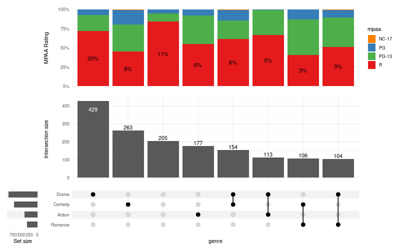
12.3 Highlight specific regions
%%R -w 800 -h 550
(
ggplot(arranged)
+ theme_void()
+ coord_fixed()
+ geom_venn_region(movies_subset, sets=genres_subset, alpha=0.2)
+ geom_point(aes(x=x, y=y, color=region), size=1.5)
+ geom_venn_circle(movies_subset, sets=genres_subset, size=2)
+ geom_venn_label_set(movies_subset, sets=genres_subset, aes(label=region), outwards_adjust=2.6)
+ scale_color_venn_mix(movies, sets=genres_subset, guide=FALSE)
+ scale_fill_venn_mix(movies, sets=genres_subset, guide=FALSE, highlight=c('Comedy-Action', 'Drama'), inactive_color='white')
)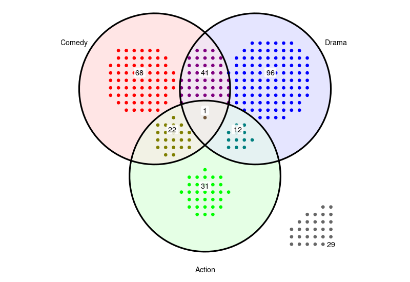
12.4 Two sets Venn
The density of the points grid is determined in such a way that the all the points from the set with the largest space restrictions are fit into the available area. In case of the diagram below, its the observations that do not belong to any set that define the grid density:
%%R -w 600 -h 450
genres_subset = c('Action', 'Drama')
(
ggplot(arrange_venn(movies_subset, sets=genres_subset))
+ theme_void()
+ coord_fixed()
+ geom_point(aes(x=x, y=y, color=region), size=2)
+ geom_venn_circle(movies_subset, sets=genres_subset, size=2)
+ geom_venn_label_set(movies_subset, sets=genres_subset, aes(label=region), outwards_adjust=2.6)
+ scale_color_venn_mix(movies, sets=genres_subset, guide=FALSE)
)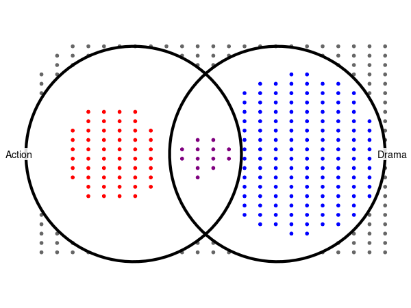